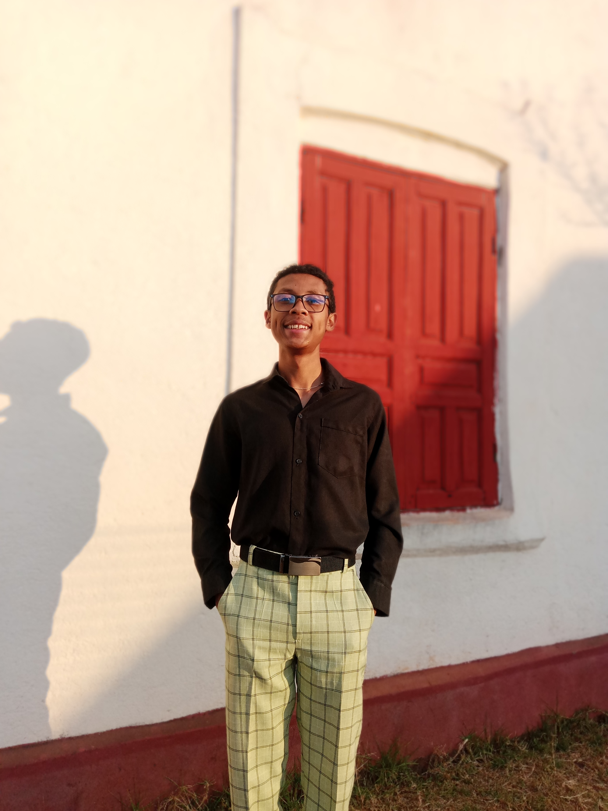

Bonjour, je m'appelle RANAIVOSON Jean Heritiana Yoni. Je suis etudiant en premiere annee d'informatique passionne par le developpement web, la programmation et les nouvelles technologies.
De nos jours, l'informatique est utilise par la plupart de la population mondiale, surtout au niveau de l'emploi. Car sans l'informatique, rien ne peut fonctionner au sein du travail, de la production,...
En conclusion, je suis en premier annee d'informatique. J'apprends actuellement le langage C, HTML, CSS et les bases de PHP. Mon objectif est de devenir developpeur web full-stack et un createur de logiciels.
Ce que je maitrise deja :
Chaque jour, j'essaie de travailler sur ces langages pour parvenir a creer un site web inetressant pour tous.
En creer un comme ceci est difficile. Cela necessite du temps et de la patience.
J'ai cree une calculatrice qui demande combien de nombres on veut taper, et le probleme est qu'on ne peut pas faire des operations en meme temps, c'est-a-dire la multiplication, la division, ... Mais une seule, mais les nombres qu'on insere dans cette calculatrice seront tous appliques par le type d'operation.
Licence 1 en Informatique a l'IT University.
Les matieres etudiees :